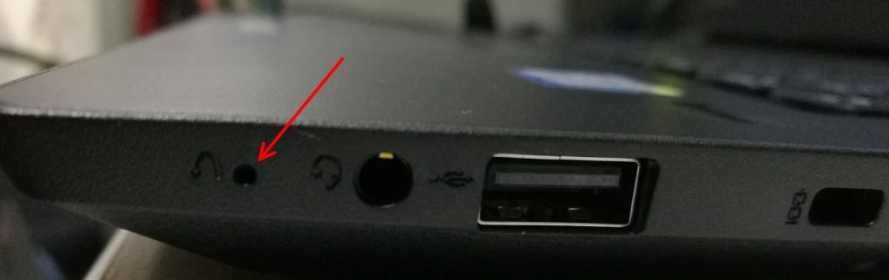
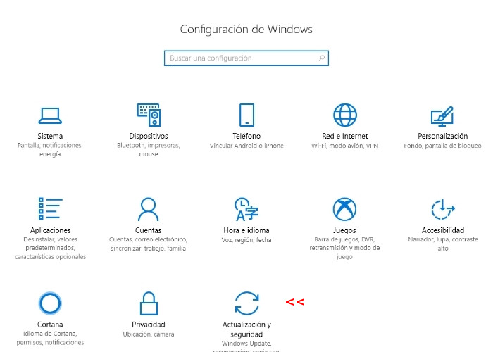
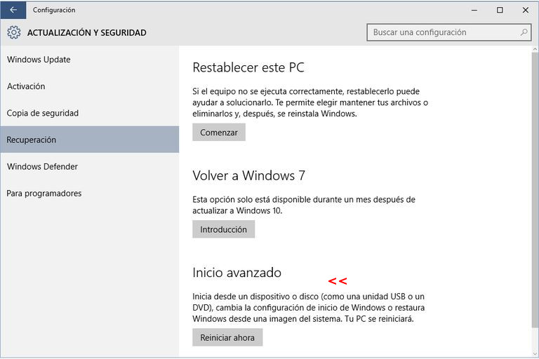
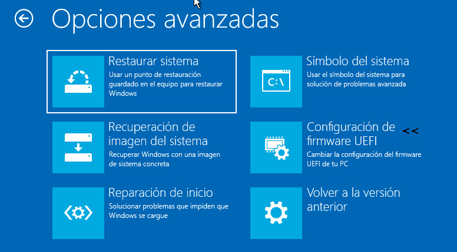

El ingreso al setup depende del modelo de cada computadora, generalmente al encender el equipo se muestra un breve mensaje indicando cuales son las teclas que llevan a dicho menú. Ejemplos: “Esc”, “Supr”, “F2”, “F8”, “F11”, “F12”. Algunos modelos de laptops, traen un pequeño orificio identificados como se muestra en la siguiente figura. Con el equipo apagado, al introducir un alfiler en dicho orificio, se accede a un menú del cual se podrá acceder al setup.
Las computadoras que vienen con Windows 10 preinstalado suelen tener configurado el “arranque rápido” (Fast boot). Entonces, al momento de encender el equipo, este se inicia automáticamente en windows sin dar la posibilidad de acceder al menú. En estos casos se debe acceder al setup desde Windows siguiendo esta serie de pasos:
Configuración >Actualización y Seguridad >
Recuperación > Inicio Avanzado y clic en Reiniciar Ahora >
Solución de problemas >
Opciones avanzadas > Configuración de firmware UEFI > reiniciar